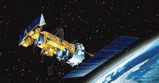
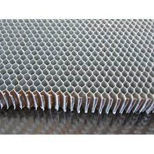
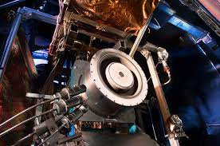
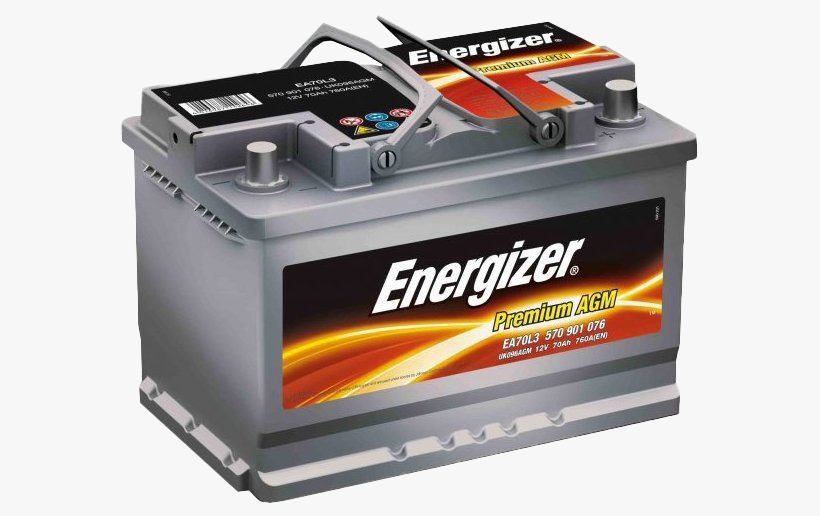
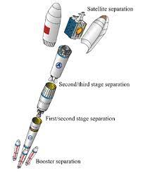
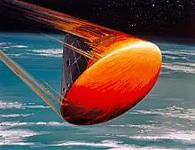
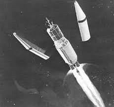
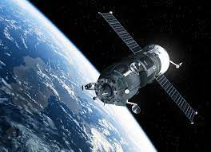

Solar Panel
A solar panel is a device that converts sunlight into electricity by using photovoltaic (PV) cells. The electrons flow through a circuit and produce direct current (DC) electricity, which can be used to power various devices or be stored in batteries. Solar panels are also known as solar cell panels, solar electric panels, or PV modules.

Defunt Satellite
For the closer satellites, engineers will use its last bit of fuel to slow it down so it will fall out of orbit and burn up in the atmosphere. Further satellites are instead sent even farther away from Earth.

Aluminium Honey Comb
As core material, aluminium honeycomb is used in sandwich panels and it is utilised in: floors, roofs, doors, partitions, facades, working surfaces for automatic machines, laser jet cutting and for all products which require an optimal stiffness-to-weight-ratio.

Thruster
A thruster is a propulsive device used by spacecraft and watercraft for station keeping, attitude control, in the reaction control system, or long-duration, low-thrust acceleration.Recent tests demonstrated that the X3 thruster can operate at over 100kW of power, generating 5.4 Newtons of thrust — the highest of any ionic plasma thruster to date. It also broke records for maximum power output and operating current

Batteries
A battery is a source of electric power consisting of one or more electrochemical cells with external connections[1] for powering electrical devices. When a battery is supplying power, its positive terminal is the cathode and its negative terminal is the anode.[2] The terminal marked negative is the source of electrons that will flow through an external electric circuit to the positive terminal.

Rocket Stages
Rockets stages are typically stacked or parallel (boosters on the sides of a central vessel). The two-stage rocket is common, but space programs have successfully launched rockets with as many as five separate stages.The three-stage-to-orbit launch system is a commonly used rocket system to attain Earth orbit.

Reentry Capsules
A reentry capsule is the portion of a space capsule which returns to Earth following a spaceflight. The shape is determined partly by aerodynamics; a capsule is aerodynamically stable falling blunt end first, which allows only the blunt end to require a heat shield for atmospheric entry. A crewed capsule contains the spacecraft's instrument panel, limited storage space, and seats for crew members. Because a capsule shape has little aerodynamic lift, the final descent is via parachute, either coming to rest on land, at sea, or by active capture by an aircraft. In contrast, the development of spaceplane reentry vehicles attempts to provide a more flexible reentry profile

Payload Fairing
A payload fairing is a nose cone used to protect a spacecraft payload against the impact of dynamic pressure and aerodynamic heating during launch through an atmosphere. An additional function on some flights is to maintain the cleanroom environment for precision instruments.[1] Once outside the atmosphere the fairing is jettisoned, exposing the payload to outer space.

Space Antenna
The Laser Interferometer Space Antenna (LISA) is a proposed space probe to detect and accurately measure gravitational waves[2]—tiny ripples in the fabric of spacetime—from astronomical sources.[3] LISA would be the first dedicated space-based gravitational-wave observatory. It aims to measure gravitational waves directly by using laser interferometry. The LISA concept has a constellation of three spacecraft arranged in an equilateral triangle with sides 2.5 million kilometres long, flying along an Earth-like heliocentric orbit